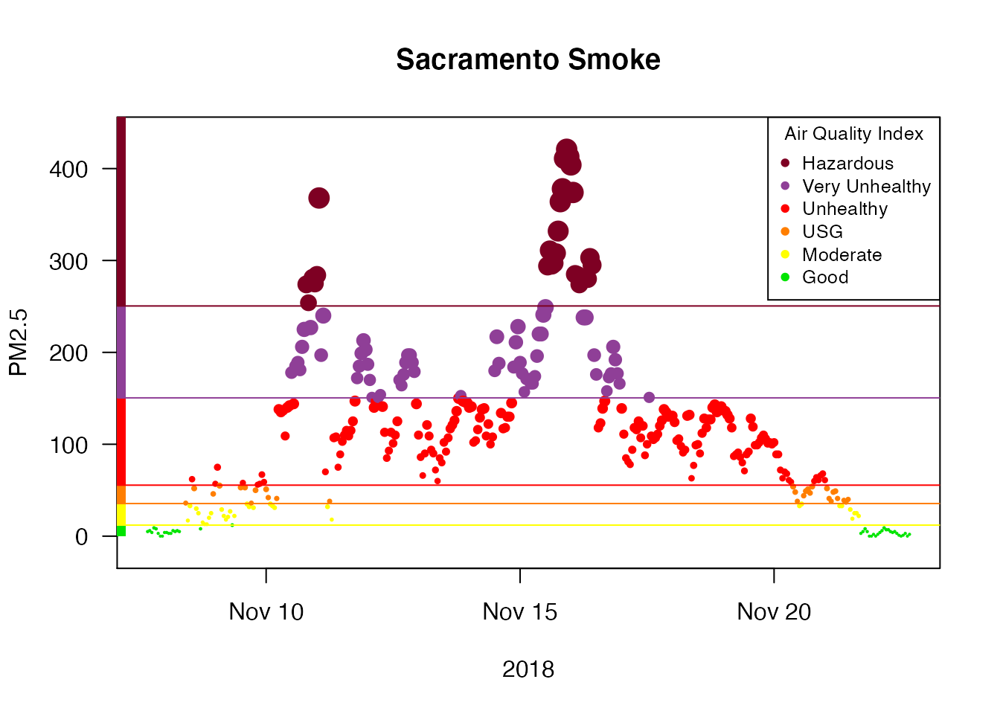
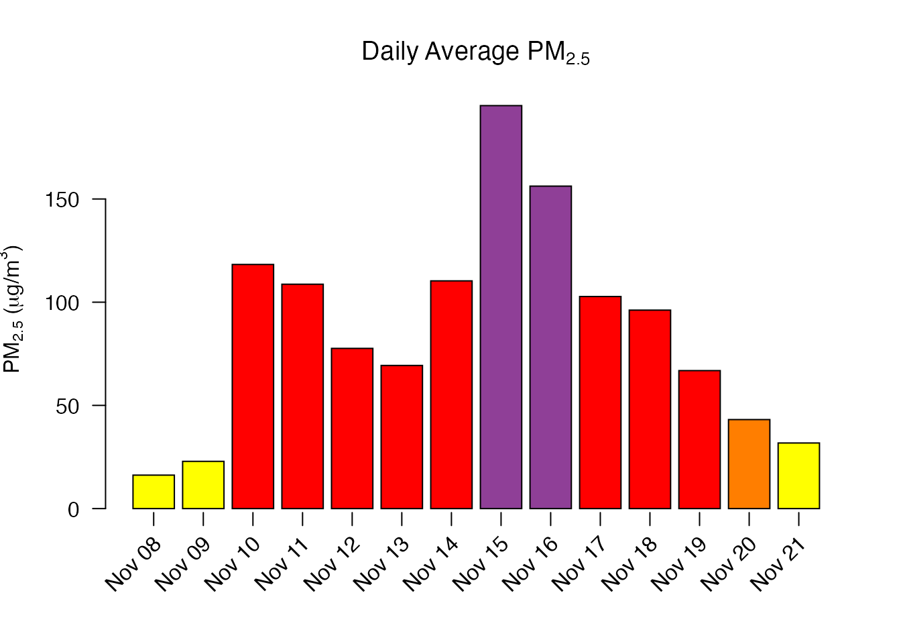

The USFS Pacific Wildland Fire Sciences Lab AirFire team works to model wildland fire emissions and has created the BlueSky Modeling Framework. This system integrates a wide collection of models along a smoke modeling pipeline (fire information, fuel loadings, consumption modeling, emissions modeling, time rate of emissions modeling, plume height estimations, and smoke trajectory and dispersion modeling). The resulting model output has been integrated into many different smoke prediction systems and scientific modeling efforts.
The PWFSLSmoke R package is being developed for PWFSL to help modelers, scientists and air quality professionals more easily work with PM2.5 data from monitoring locations across North America.
The package makes it easier to obtain data, perform analyses and generate reports. It includes functionality to:
This introduction will help you get set up and walk you through a few simple analyses.
This package is designed to be used with R (>= 3.3) and RStudio so make sure you have those installed first.
The following packages should be installed by typing the following at the RStudio console:
install.packages('MazamaSpatialUtils')
install.packages('PWFSLSmoke')Users will want to install the devtools package to have access to the latest version of the package from Github. Building vignettes will require knitr and rmarkdown:
# Note that vignettes require knitr and rmarkdown
install.packages('knitr')
install.packages('rmarkdown')
install.packages('MazamaSpatialUtils')
devtools::install_github('MazamaScience/PWFSLSmoke', build_vignettes=TRUE)Any work with spatial data, e.g. assigning countries, states and timezones while ingesting raw data, will require installation of required spatial datasets. To get these datasets you should type the following at the RStudio console:
library(MazamaSpatialUtils)
dir.create('~/Data/Spatial', recursive=TRUE)
setSpatialDataDir('~/Data/Spatial')
installSpatialData()The package has a lot of functions but most of them fall into a few specific categories identified by the function name prefix:
airnow_ – functions for processing AirNow dataairsis_ – functions for processing raw AIRSIS dataepa_ – functions for processing EPA datamonitor_ – functions for working with ws_monitor objectsraw_ – functions for processing raw, “engineering” data from AIRSIS and WRCCwrcc_ – functions for processing raw WRCC dataFor most people, only the monitor_ category is important as it allows you to work with pre-generated ws_monitor objects as described in the “Data Model” vignette.
A ws_monitor object contains both data and metadata for a collection of monitors. It has a very compact data model and allows you to work with data from many monitors at once.
The USFS AirFire group regularly processes monitoring data in support of their Monitoring Website. Pre-processed data files can be loaded from their servers by the following functions:
~_load() – load data based on a start- and end-time~loadAnnual() – load a year’s worth of data~loadDaily() – load the most recent 45 days of data (updated once per day)~loadLatest() – load the most recent 10 days of data (updated every hour)Data archives go back over 10 years depending on the source of data.
We encourage people to embrace “data pipeline” style coding as encouraged by dplyr and related packages. The special %>% operator sends the output of one function to the input of the next function, thus allowing for easy “chaining” of results.
With only a few exceptions, all the monitor_ functions accept a ws_monitor object as their first argument and generate a ws_monitor object as a result so they can be chained together.
Let’s say we are interested in the impact of smoke from the 2018 Camp Fire on the Sacramento area.
We would begin by creating a camp_fire ws_monitor object that has all the monitors in California for the period of interest:
camp_fire <-
monitor_loadAnnual(2018) %>%
monitor_subset(stateCodes = 'CA') %>%
monitor_subset(tlim = c(20181108,20181123))We can display these monitors (colored by maximum PM2.5 value) in an interactive map, zoom in and click on the monitor in downtown Sacramento to get it’s monitorID:
We can use this monitorID to create a ws_monitor object for this single monitor and take a look at a timeseries plot:
Sacramento <-
camp_fire %>%
monitor_subset(monitorIDs = '060670010_01')
monitor_timeseriesPlot(
Sacramento,
style='aqidots',
pch=16,
xlab="2018"
)
addAQIStackedBar()
addAQILines()
addAQILegend(cex=0.8)
title("Sacramento Smoke")
Next, we can use this specific location to create a ws_monitor object containing all monitors within 50km of Sacramento:
Sacramento_area <-
camp_fire %>%
monitor_subsetByDistance(
longitude = Sacramento$meta$longitude,
latitude = Sacramento$meta$latitude,
radius = 50
)
monitor_leaflet(Sacramento_area)We can display the hourly data for all the monitors and add day/night shading:
We can average together all the monitors and create a local-time daily average for the Sacramento area:
## datetime generated_id
## 1 2018-11-08 16.21326
## 2 2018-11-09 22.88914
## 3 2018-11-10 118.27386
## 4 2018-11-11 108.70644
## 5 2018-11-12 77.61905
## 6 2018-11-13 69.34701
## 7 2018-11-14 110.33220
## 8 2018-11-15 195.24252
## 9 2018-11-16 156.23176
## 10 2018-11-17 102.75000
## 11 2018-11-18 96.15941
## 12 2018-11-19 66.85133
## 13 2018-11-20 43.12689
## 14 2018-11-21 31.78472Alternatively, we can plot the daily averages:
Sacramento_area %>%
monitor_collapse() %>%
monitor_dailyBarplot(labels_x_nudge = 0.5,
labels_y_nudge = 15)
Hopefully, this short introduction will encourage you to start using this package for your own analyses.